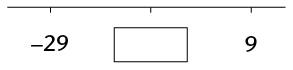
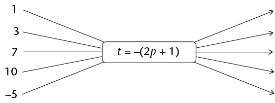
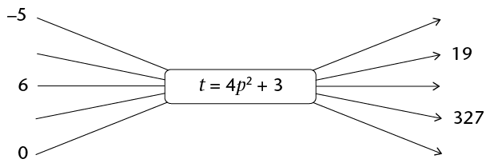
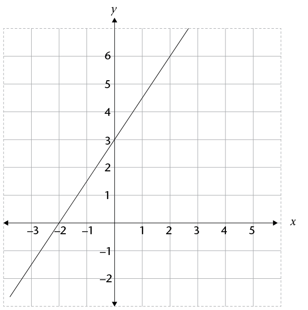
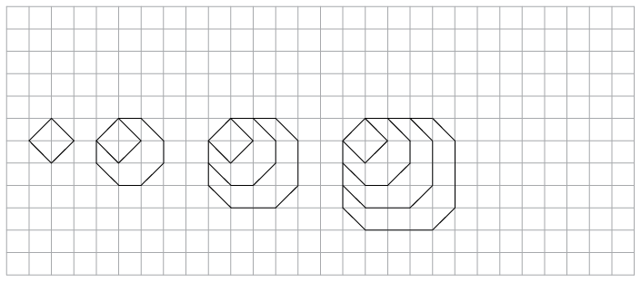
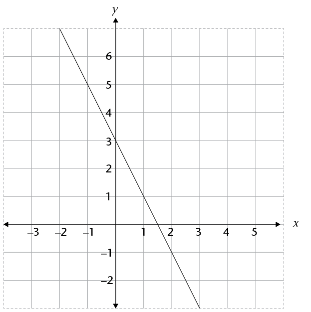

Hersiening en assessering
Hersiening
Onthou om al die stappe in jou werk te wys.
Telgetalle
-
Skryf al die getalle wat in die wolk voorkom in die tabel oor en plaas 'n regmerkie in al die getaltipekolomme waaraan die getal behoort. Die eerste getal is reeds as voorbeeld gedoen.

Getal-waarde
Getallestelsel
Reële getalle
Natuurlike getalle
Heelgetalle
Rasionale
Irrasionale getalle
-3
✔
✔
✔
Die Ndlovu-gesin reis na die Kruger Nasionale Park vir 'n vakansie. Hier is 'n opsomming van hulle reis:
Tyd
Kilometerlesing
Beskrywing
06:12
123 564
Vertrek vanaf hul huis
08:32
123 785
Stop vir ontbyt en petrol
09:18
123 785
Vertrek vanaf vulstasie
11:34
124 011
Ruskamerstop
11:51
124 011
Vertrek vanaf vulstasie
13:32
124 175
Bereik Krugerhek
Bereken die getal ure wat die reis geduur het. Gee jou antwoord as 'n gemengde getal.
Bereken die gemiddelde spoed van die reis, afgerond tot een desimale plek.
'n Motor wat teen 'n gemiddelde spoed van 110 km/h reis, neem \(\frac{1}{4}\) uur om 'n reis te voltooi. Indien die terugreis binne 2 uur moet geskied, wat is die gemiddelde spoed wat gehandhaaf moet word?
-
As 4 blikkies vleis R75,80 kos, hoeveel sal 7 sulke blikkies vleis kos?
'n Boer het genoeg hoendervoer om 300 henne 20 dae lank te voer. Hoe lank sal dieselfde hoeveelheid voer hou voor dit opraak as hy nog 100 henne sou bykoop?
Hoe lank sal dit R5 000 neem om te groei tot R5 900 as dit belê word teen 7,2% enkelvoudige rente per jaar?
Chardonnay wil 'n nuwe TV-stel wat R7 499 kos, koop. Sy het nie genoeg geld nie en oorweeg om dit op huurkoop te kry. Die winkel vra 'n deposito van 10% en dan gelyke maandelikse betalings van R\(x\) vir 2 jaar. Indien die enkelvoudige rente wat op die rekening gehef word 15% is, bereken die waarde van \(x\).
Hoeveel rente sal Tebogo kry as hy R12 500 deponeer vir 21 maande in 'n bankrekening wat 5,3% saamgestelde rente per jaar lewer?
Heelgetalle
Al die vrae in hierdie afdeling moet sonder 'n sakrekenaar gedoen word.
-
Skryf 'n getal in elke blokkie om die vergelykings waar te maak:
-
\(☐ + ☐ = -34\)
-
\(☐ + ☐ = -34\)
-
- Hierdie vrae gaan oor getallerye. Vul die korrekte waardes in die blokkies in.
-
18; 10; 2; ☐
-
2; -10; 50; ☐
-
-6 386; -6 392; -6 398; ☐
-
-
Hier onder is 'n getallelyn. Die ontbrekende getal is presies halfpad tussen die ander twee getalle. Vul die korrekte waarde in die blokkie in.

-
Bereken die volgende:
-
\(28 - (-15)\)
-
\((-5)(12)(-7)\)
-
\(5 + 5 \times -6\)
-
\(\frac{(\sqrt{81})(-2)^{3}}{-(-3)^{2}}\)
-
\(\frac{(-3)^{2} \sqrt[3]{216}}{(-9)(-3)}\)
-
-
Keiser Augustus het vanaf 27 v.C. tot 14 n.C. oor die Roomse Ryk geheers. Hoeveel jaar het hy regeer?
Breuke
Al die vrae in hierdie afdeling moet sonder 'n sakrekenaar gedoen word.
-
Vereenvoudig:
-
\(\sqrt{\frac{36}{81} x^8}\)
- \(\frac{5}{2}\)\(x^{2} - \frac{5}{4}\)\(x^{2}\)
-
\((\frac{3}{4}xy^{3})(\frac{4}{9}y)\)
-
-
Vereenvoudig:
- \(\frac{4x^{10}}{8x^5}\)
- \(\frac{\text{5}}{\text{x}}- \frac{1}{x}\)
- \(\frac{5x}{\text6{y^2}} \times \frac{3y}{15x}\)
- \(\frac{x+2}{4z^2} \div \frac{4(x+2)}{2z^3}\)
- \(\frac{4x^{10}}{8x^5}\)
Die desimale notasie vir breuke
Al die vrae in hierdie afdeling moet sonder 'n sakrekenaar gedoen word.
- Bereken:
- \(27,49 - 6,99\)
- \(0,03 \times 1,4\)
- \(1,44 \div 0,012\)
- \(27,49 - 6,99\)
- Vereenvoudig:
- \(\sqrt{0.04 x^{16}}\)
- \(3.5x^{2} - 4,6 x^{2}\)
- \((1,2 x^{2}y^{3})(5y x^{2})\)
- \(\sqrt{0.04 x^{16}}\)
- Vereenvoudig:
- \(\frac{0.2 x^{15}}{0.01x^5}\)
- \(\frac{0.45}{x} - \frac{1.35}{x}\)
- \(\frac{0,5 x^{3}}{4.5y^2} \times \frac{3y}{2,5x}\)
- \(\frac{2,5 x^{3}}{2y^2} \div \frac{0,5x}{0,03y^6}\)
- \(\frac{0.2 x^{15}}{0.01x^5}\)
Eksponente
Al die vrae in hierdie afdeling moet sonder 'n sakrekenaar gedoen word, tensy anders gespesifiseer.
- Skryf in wetenskaplike notasie:
- 2 500 001
- 0,000 304 5
- 2 500 001
- Skryf die getal \(9,45 \times 10^{-5}\)in
"gewone" notasie.
- Watter een van hierdie getalle is die grootste:
\(4,7 \times 10^{-9}\) of \(5,12 \times 10^{-10}\)?
- Bereken die volgende en gee jou antwoord in
wetenskaplike notasie:
- \((5,9 \times 10^{6} ) - (4,7 \times 10^{6})\)
- \((5,9 \times 10^{6} ) + (4,7 \times 10^{5})\)
- \((7,2 \times 10^{-4} ) \times (2 \times\) \(10^{2})\)
- \((5,9 \times 10^{6} ) - (4,7 \times 10^{6})\)
- Bereken die volgende en gee jou antwoord
as 'n "gewone" desimale getal. Jy mag 'n sakrekenaar gebruik.
- \((6,3 \times 10^{-4} ) - (1,9 \times 10^{-3})\)
- \((5,8 \times 10^{-7} ) \div (8 \times 10^{-11})\)
- \((6,3 \times 10^{-4} ) - (1,9 \times 10^{-3})\)
- Vereenvoudig en skryf al die antwoorde met positiewe eksponente:
- \(3^{-2}\)
- \(2^{7} \times 6^{-3} \times 3^{2}\)
- \(\frac{2y^{-3}}{y^3}\)
- \((2x^{6}) ^{-3}\)
- \((2x^{7}) (2,5x^{-8})\)
- \((-3a^{2}bc)^2 ( -5ac^{-2})\)
- \(\frac{(2d^2e)^2}{(4d^{-3}e^2)^{-1}}\)
- \(3^{-2}\)
- Los die vergelykings op:
- \(3 \times 3^{x} = 81\)
- \(2^{x+1} = 0,125\)
- \(4^{x} +10 = 74\)
- \(3 \times 3^{x} = 81\)
Patrone
- Vorm 'n getallery wat voldoen aan
hierdie beskrywing: die eerste term is negatief,
daarna word elke volgende term verkry deur die voorafgaande term te kwadreer en
dan 10 af te trek. Skryf die eerste vier terme van die getallery neer.
- Doen die volgende vir elk van die getallerye
hier onder: (i) skryf die reël wat die
verband tussen die terme in die ry beskryf in woorde neer, en (ii) gebruik die
reël om die getallery met nog drie terme uit te brei.
- -5; -2; 10; -20; ...
- -4,5; -6,25; -8; ...
- -5; -2; 10; -20; ...
- In hierdie vraag word die reël waarvolgens
elke term in die getallery bepaal word,
gegee. In al die gevalle is n die
term se posisie. Bepaal die eerste drie terme in elk van
die getallerye:
- \(3 - 5n\)
- \(2n ^{2} - 3n + 1\)
- \(3 - 5n\)
-
- Skryf die reël neer waarvolgens elke term van die getallery bepaal kan word.
Doen dit in 'n formaat soortgelyk aan dié in vraag 3
gegee, waarn die posisie van die term is.
-15; -12; -9; ...
- Gebruik jou reël om die waarde van die 150ste term van die
getallery te bepaal.
- Skryf die reël neer waarvolgens elke term van die getallery bepaal kan word.
Doen dit in 'n formaat soortgelyk aan dié in vraag 3
gegee, waarn die posisie van die term is.
-15; -12; -9; ...
- Stel vas wat die patroon is en vul dan die ontbrekende waardes in die tabel in:
Posisie in getallery
1
2
3
4
5
10
Termwaarde
2
5
10
17
226
- Die prentjie hier onder wys 'n
patroon wat met vuurhoutjies gebou is.

- Teken jou eie reeks vuurhoutjiepatrone waar daar 'n gemeenskaplike verskil tussen opeenvolgende figure is. Dit moet verskil van al die vuurhoutjiepatrone wat in hierdie hoofstuk en Hoofstuk 6 gewys is en dit moet die eerste drie vuurhoutjiepatrone in die reeks bevat.
- Skryf die reël neer wat die getal vuurhoutjies vir enige term kan bepaal.
- Gebruik die reël om die ontbrekende waardes in die tabel in te vul.
Figuurnommer
4
5
6
7
50
Getal vuurhoutjies benodig
Funksies en verbande
-
- Gebruik die gegewe formule om die ontbrekende waardes van t,
te bepaal met die
waardes van p wat gegee is:

- Gebruik die gegewe formule om die ontbrekende invoerwaardes, p, en
uitvoerwaardes
t te bepaal.

- Gebruik die gegewe formule om die ontbrekende waardes van t,
te bepaal met die
waardes van p wat gegee is:
- Kyk na die waardes in die tabel hier onder:
\(x\)
-2
-1
0
1
4
12
\(y\)
-4
-1
2
5
65
- Skryf die reël om die
y-waardes in die tabel te bepaal
as 'n algebraïese
formule in die vorm \(y = ax + b\), where \(a\) and \(b\)
are integers.
- Gebruik die reël om die ontbrekende waardes in die tabel
in te vul.
- Skryf die reël om die
y-waardes in die tabel te bepaal
as 'n algebraïese
formule in die vorm \(y = ax + b\), where \(a\) and \(b\)
are integers.
- Kyk na hierdie grafiek:

- Voltooi die tabel deur die koördinate van punte van die grafiek af te lees:
\(x\)
-3
-2
-1
0
1
2
\(y\)
- Skryf die algebraïese formule vir die
grafiek in die vorm \(y = \)...
- Voltooi die vloeidiagram om die verband wat die grafiek illustreer
voor te stel:

- Voltooi die tabel deur die koördinate van punte van die grafiek af te lees:
Algebraïese uitdrukkings
- Vereenvoudig so ver as moontlik:
- \( (2x^{2} - 4x^{2}) ^{3}\)
- -\( 2x^{2} (5x^{3} - 3x^{2} + 2x - 5)\)
- \( (4b^{2} - 7b^{2})(5b^{-2} + 3b^{-1} - 7)\)
- \(\frac{18x^2 - 12x + 2}{6x}\)
- \((2x+5)(3x-1)\)
- \((4a - 3)^{2}\)
- \(\frac{6x^3 -2(3x)(4x) + x}{4x^2}\)
- \( (2x^{2} - 4x^{2}) ^{3}\)
- Vereenvoudig so ver as moontlik:
- \(4(a-2b) - 5(3b + a)\)
- \(5 +2(x^2 +5x +3)\)
- \(3x(2x^2 -3x + 4) - 3(5 - 2x)\)
- \((a + 3b - 2c) - (4a + b - c) - (2b - c +3a)\)
- \(4(3x^2 + x - 4) - (x + 3)^{2}\)
- \(4(a-2b) - 5(3b + a)\)
Vergelykings
- Los die volgende vergelykings op:
- \(4 - 3x = -2\)
- \(4(2x- 1) = -8\)
- \(2x + 1 = 3(2x - 1)\)
- (\(x + 2)(x - 4) = x^{2} + 5x - 1\)
- \(4 - 3x = -2\)
- Thomas is \(z\) jaar oud en Tshilidzi is twee keer so oud soos Thomas. Die som van hul
ouderdomme is 42.
- Skryf hierdie inligting neer as 'n vergelyking met die
veranderlike \(z\).
- Los die vergelyking op om Tshilidzi se ouderdom te bepaal.
- Skryf hierdie inligting neer as 'n vergelyking met die
veranderlike \(z\).
- Die basis van 'n driehoek is \((1,5x + 6)\) cm en die hoogte is 4 cm. Die oppervlakte van
die driehoek is 24
cm2.
- Skryf hierdie inligting as 'n vergelyking in
\(x\) neer.
- Los die vergelyking op om die waarde van \(x\) te bepaal.
- Hoe lank is die basis van die driehoek?
- Skryf hierdie inligting as 'n vergelyking in
\(x\) neer.
- Los op vir \(x\):
- \(3^{x} = 9\)
- \(2^{x+1} = 16\)
- \(3^{x} = 9\)
Assessering
In hierdie afdeling dui die getalle tussen hakies aan die einde van 'n vraag aan hoeveel punte die vraag werd is. Gebruik hierdie inligting om te bepaal hoeveel werk nodig is by elke vraag. Die totale getal punte vir hierdie assessering is 75.
- Gareth het die volgende getalle geklassifiseer:
Getalwaarde
Getallestelsel
Reële getalle
Natuurlike getalle
Heelgetalle
Rational numbers
Rasionale getalle
-1,5
✔
✔
✔
\(\sqrt{2}\)
✔
✔
- Gareth het 'n paar foute gemaak. Voltooi die volgende tabel deur die merkies in
die korrekte blokkies te maak:
Getalwaarde
Getallestelsel
Reële getalle
Natuurlike getalle
Heelgetalle
Rasionale getalle
Irrasionale getalle
-1,5
\(\sqrt{2}\)
- Verduidelik hoekom jy jou veranderings aangebring het.
- Gareth het 'n paar foute gemaak. Voltooi die volgende tabel deur die merkies in
die korrekte blokkies te maak:
- Pheto het R1 500 vir 2 jaar
in 'n bankrekening belê. Aan die einde van die tydperk
het sy aanvanklike belegging gegroei tot R1 717,50. Watter enkelvoudige rentekoers
het die bank aan hom gegee? (Neem aan dat die rentekoers nie gedurende die
tydperk aangepas is nie). Gee jou antwoord as 'n persentasie.
-
'n Bentiër het 2 500 bendollers omgesit in darsek toe hy die Klingon Ryk bereik het.
Hy het 2 000 darsek gekry nadat 3% kommissie gehef is.
Bepaal die bendoller : darsek wisselkoers. Skryf dan die volgende sin oor en voltooi dit:
"1 Klingon darsek = ___ bendoller". Die ontbrekende waarde moet afgerond word
tot die derde desimaal.
-
Bereken die verskil tussen die hoogste punt op die aarde se oppervlak
(Mt Everest: 8 848 m onder seespieël) en die diepste punt van die
seebodem (die bodem van die Marianassloot, 10 994 m onder seespiëel)?
-
Skryf twee getalle neer wat 21 as antwoord gee as die een van die ander afgetrek word.
Een van die getalle moet positief wees, en die ander een negatief.
-
- Wat is de waarde van \((-1)^{1000 001}\)?
- Verduidelik hoe jy die antwoord in (a) kon
kry sonder 'n sakrekenaar.
- Wat is de waarde van \((-1)^{1000 001}\)?
-
Vereenvoudig die volgende sonder 'n sakrekenaar. Wys al die stappe in jou werk:
- \(\frac{5}{2}x
-\frac{11}{4}x + 1,125x\)
- \(\sqrt[3]{\frac{0,027
x^7}{316x}}\)
- \(\frac{0,4x}{10}
\times \frac{20x}{0,03} \div \frac{8x^{2}}{5}\)
- \(\frac{x}{4}+ [8x (x + 1) \times
\frac{0,5}{x+1}]\)
- \(\frac{5}{2}x
-\frac{11}{4}x + 1,125x\)
- Die middellyn van 'n koolstofatoom is 0,000000000154 meter. Skryf dit in
wetenskaplike notasie.
- Vereenvoudig die volgende (gebruik slegs positiewe eksponente in die antwoorde):
- \(3^{-9} \times 3^{4}\)
- \(\frac{(3d^3e^2)^3}{(2d^{-4}e)^-1}\)
- \(3^{-9} \times 3^{4}\)
- Los op vir \(x\): \(9^{2x-3} = 3^{x}\)
- Kyk na die volgende getallery: 6 000; -1 500; 375; ...
- Brei dit met twee terme uit.
- Is die volgende reël korrek (n is die posisie van die term in die getallery): \(6 000(0,25)^{n-1}\)? Verduidelik jou antwoord.
- Brei dit met twee terme uit.
- Die onderstaande figuur wys 'n vuurhoutjiepatroon.

- Teken die vyfde diagram in die patroon op die rooster.
- Die eerste twee terme in die ry wat geskep is deur die getal vuurhoutjies in elke
patroon te gebruik, is: 4; 11. Skryf die volgende drie terme in die getallery neer.
- Skryf die reël wat die verband tussen terme in die ry beskryf, in woorde.
- Kyk na die waardes in die tabel hier onder:
\(x\)
-2
-1
0
1
5
16
\(y\)
-10
-3
-2
-1
7 998
- Skryf die reël waarmee die y-waardes in die tabel bepaal word as 'n algebraïese
formule. (Wenk: Kyk na die derdemagte van die getalle.)
- Gebruik die reël om die tabel se ontbrekende waardes in te vul.
- Skryf die reël waarmee die y-waardes in die tabel bepaal word as 'n algebraïese
formule. (Wenk: Kyk na die derdemagte van die getalle.)
- Kyk na die volgende grafiek:

- Voltooi die tabel deur die koördinate van punte van die grafiek af te lees:
\(x\)
-2
-1
0
1
2
3
\(y\)
- Skryf 'n algebraïese formule vir die grafiek
in die vorm \(y = ...\)
- Voltooi die tabel deur die koördinate van punte van die grafiek af te lees:
- Vereenvoudig:
- \(\frac{15+x-5x^2}{5x^2}\)
- \((3x+1)(3x-1)\)
- 4 - \(3(2x+ 3)^{2}\)
- \(\frac{15+x-5x^2}{5x^2}\)
- Los die volgende vergelykings op:
- \(x^2 + 5x - 1 - x^2 -x + 3 = 3(x-4)\)
- \(2(2x+3) = (3x-1)(-2)\)
- \(x^2 + 5x - 1 - x^2 -x + 3 = 3(x-4)\)